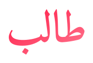

Gestaltung · 20. August 2026
Die Marke, die seit heute in der App steht, ist ein einziger SVG-Pfad — kein Text. Das ist Absicht: sie sieht auf jedem Gerät gleich aus, auch wo keine arabische Schrift installiert ist. Diese Seite zeigt, wie dieselben vier Buchstaben in vierzehn anderen Schriften aussähen.
Wie das hier gemeint ist: unten wählst du eine aus — sie wird rot umrandet, und ganz unten steht ihr Name zum Kopieren. Aus der gewählten Schrift baue ich dann wieder einen SVG-Pfad, damit die Unabhängigkeit vom Gerät erhalten bleibt. Direkt als Schriftart einzubinden wäre der falsche Weg: dann hinge das Gesicht der App an einer Datei von Google.

SVG-Pfad · 2.493 Bytes · derselbe Verlauf wie hier
Dieselbe Höhe wie heute — height: 2rem, also 32 px. Daran
entscheidet sich mehr als am großen Bild: eine Schrift, die groß schön ist,
kann hier zu einem Strich zusammenfallen.
⛔ Nichts davon ist eingebaut. Diese Seite ändert die App nicht — sie
zeigt nur. Sag mir den Namen, dann wandle ich die Schrift in Pfade um und baue
sie ein, mit wortmarke-talib.svg als Rückweg.